Analiza rješenja · JOI Spring Camp 2017 · Dan 3
Dugačka palača
O ovom članku
Tekst je prijevod službene japanske prezentacije rješenja, preoblikovan u članak. Slajdovi su ugrađeni kao slike; natpis pod svakim slajdom je prijevod teksta na njemu. Dijelovi označeni kao trenerska napomena nisu u izvornoj prezentaciji — dodani su da popune korake koje slajdovi preskaču ili samo skiciraju.
Slajdovi
Zadatak
izvorni slajdovi 1–2
-
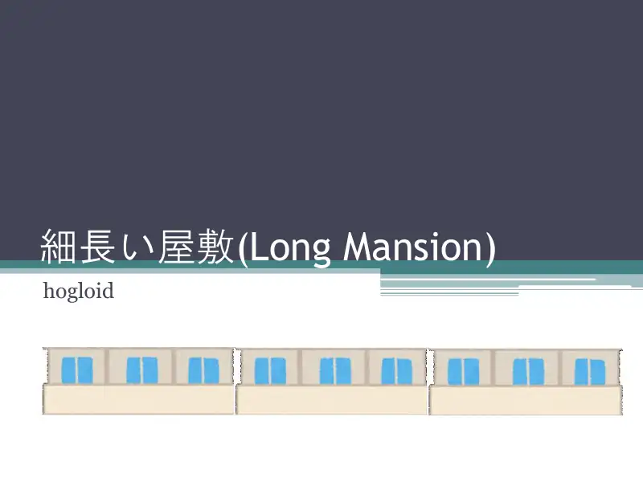
1Naslov; hogloid. -
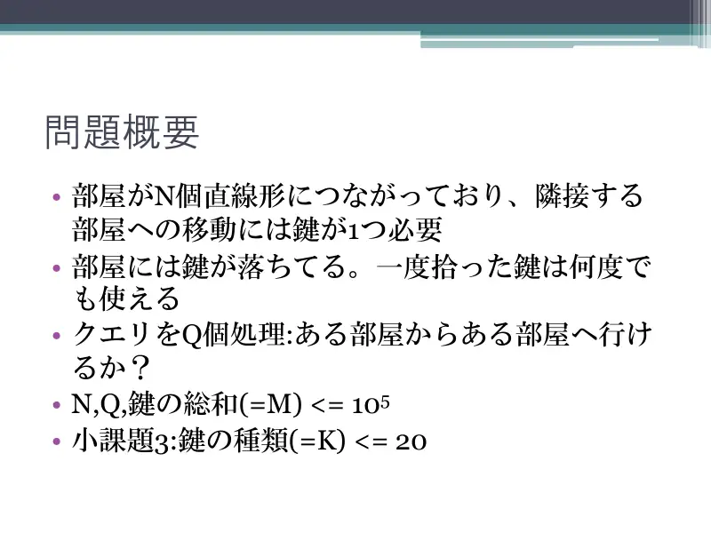
2Sobe u nizu, hodnik traži ključ, ključevi se skupljaju; upiti dostižnosti; $N,Q,M\le5\cdot10^5$ ($10^5$ u prezentaciji); podzadatak 3: tipova $\le20$.
← → tipke ili klik na sliku
Podzadaci 1–3 25 bodova
Koraci algoritma
Intervali i kompresija
izvorni slajdovi 3–5
-
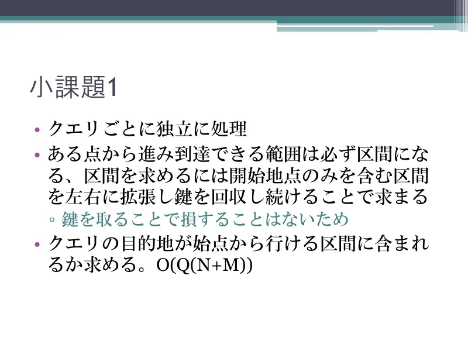
3Po upitu: doseg je interval, širi ga skupljajući ključeve; $O(Q(N+M))$. -
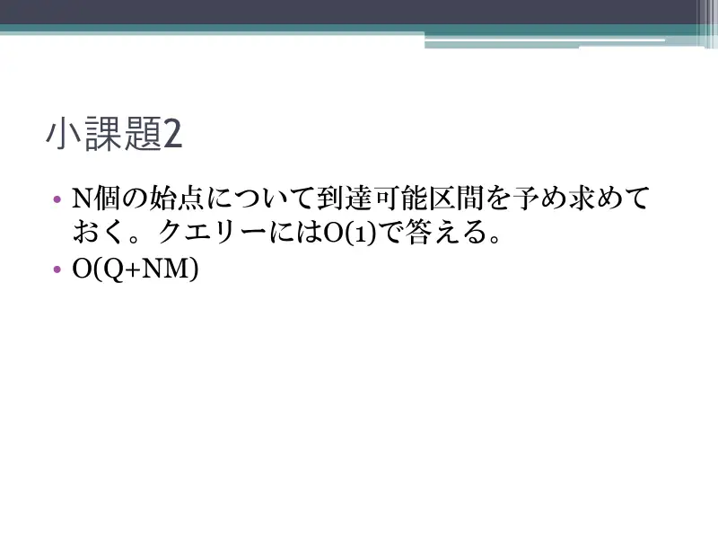
4Predračun za svih $N$ startova, upit $O(1)$: $O(Q+NM)$. -
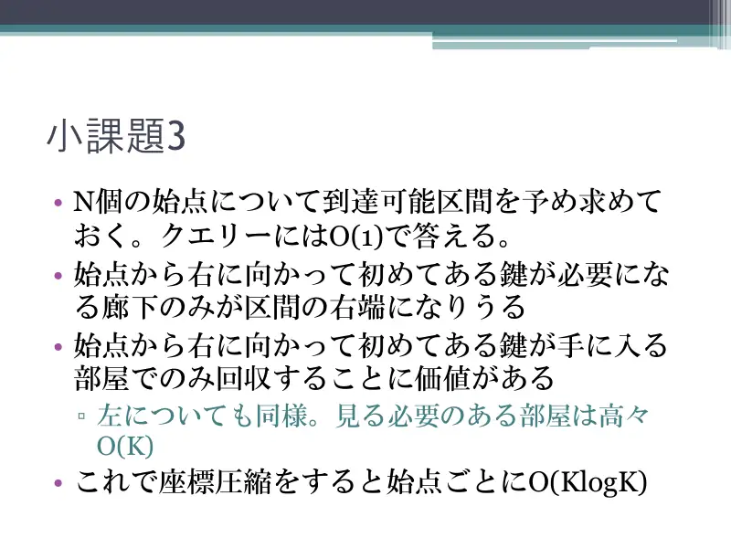
5Tipova $\le20$: samo prvi hodnik koji traži određeni tip i prva soba koja daje određeni tip su bitni; $O(K)$ soba po startu, $O(K\log K)$.
← → tipke ili klik na sliku
Puno rješenje 1 75 bodova
Koraci algoritma
Memoizirana rekurzija i DSU
izvorni slajdovi 6–8
-
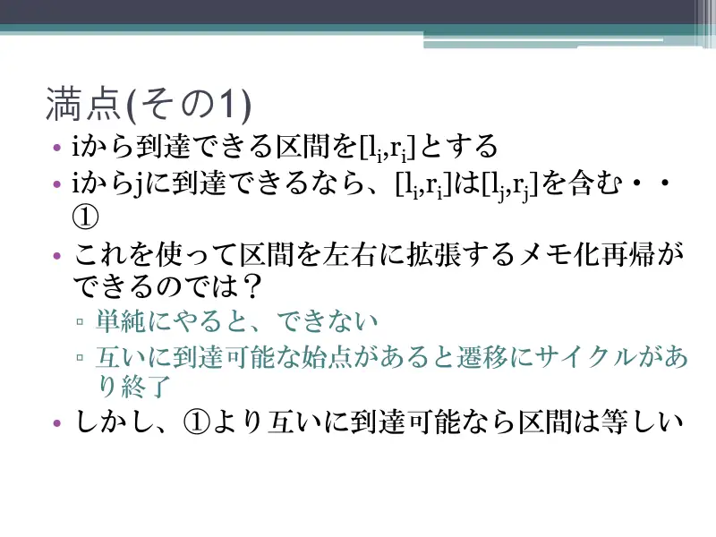
6$i\to j$ ⇒ $[l_i,r_i]\supseteq[l_j,r_j]$. Memoizirana rekurzija? Ciklusi uzajamne dostižnosti — ali tada su intervali jednaki. -
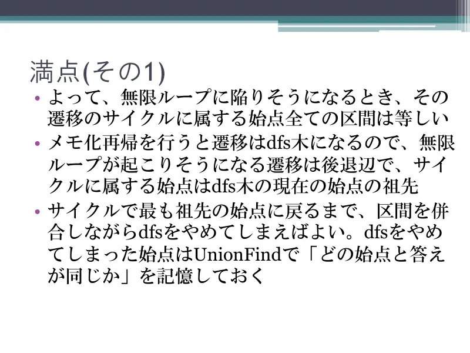
7Ciklus = povratni brid na DFS-stogu; spajaj intervale i prekini DFS do najstarijeg pretka; DSU pamti „isti odgovor kao”. -
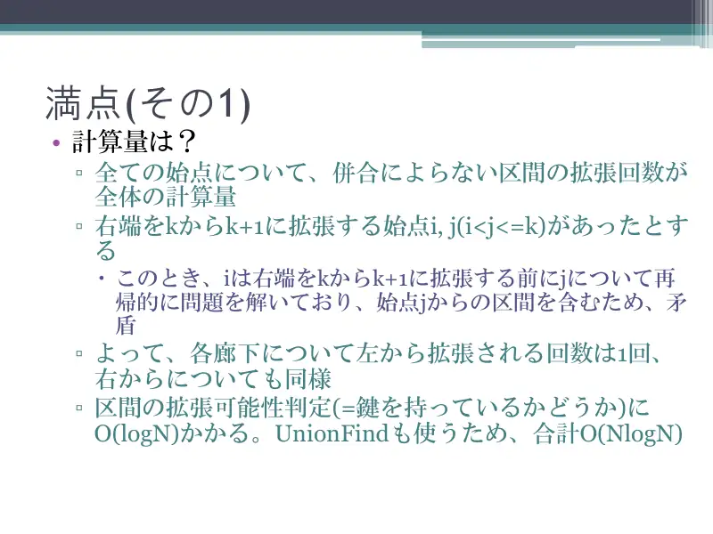
8Složenost: svaki hodnik proširen s lijeva najviše jednom (inače bi start $i$ već sadržavao interval starta $j$); provjera ključa $O(\log N)$; ukupno $O(N\log N)$.
← → tipke ili klik na sliku
Puno rješenje 2
Koraci algoritma
Široki koraci i memo stanja
izvorni slajdovi 9–12
-
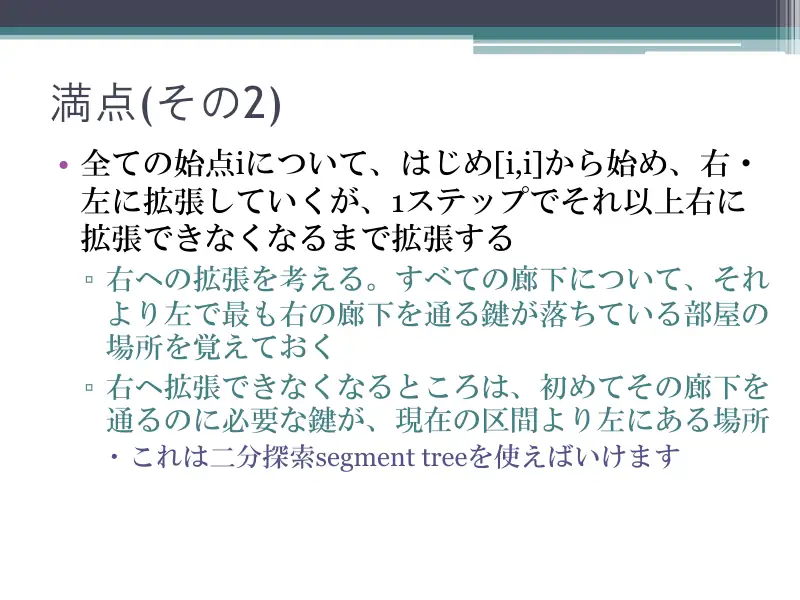
9Iz $[i,i]$ širi desno do zaustavljanja: za svaki hodnik zapamti najdesniju sobu lijevo s njegovim ključem; zaustavljanje = prvi hodnik čiji je ključ lijevo od intervala; segmentno stablo + binarna pretraga. -
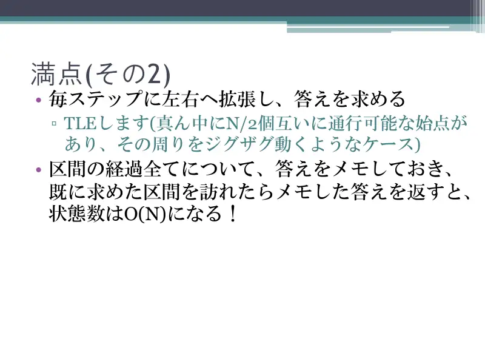
10Naizmjence lijevo/desno — TLE na zig-zag testu; memoiziraj odgovor po posjećenom intervalu: stanja $O(N)$. -
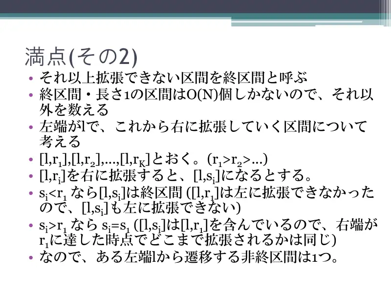
11Terminalnih i jediničnih intervala $O(N)$. Za lijevi kraj $l$ i $[l,r_1],[l,r_2],\dots$ ($r_1\gt r_2\gt\dots$) koji se šire desno u $s_i$: ako $s_i\lt r_1$, $[l,s_i]$ je terminalan; inače $s_i=s_1$. Dakle po $l$ jedno ne-terminalno stanje. -
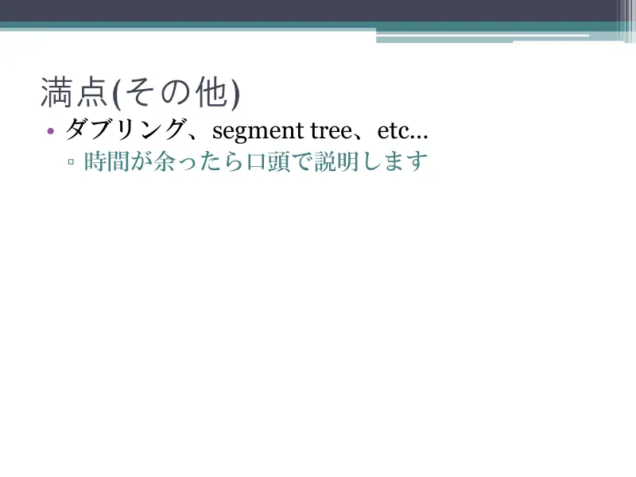
12Ostalo: doubling, segmentna stabla…
← → tipke ili klik na sliku
Slajdovi
Statistika
izvorni slajdovi 13–14
-
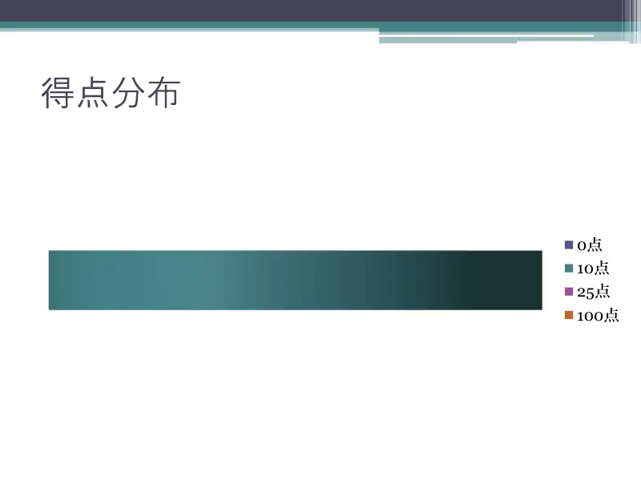
13Bodovi 0/10/25/100. -
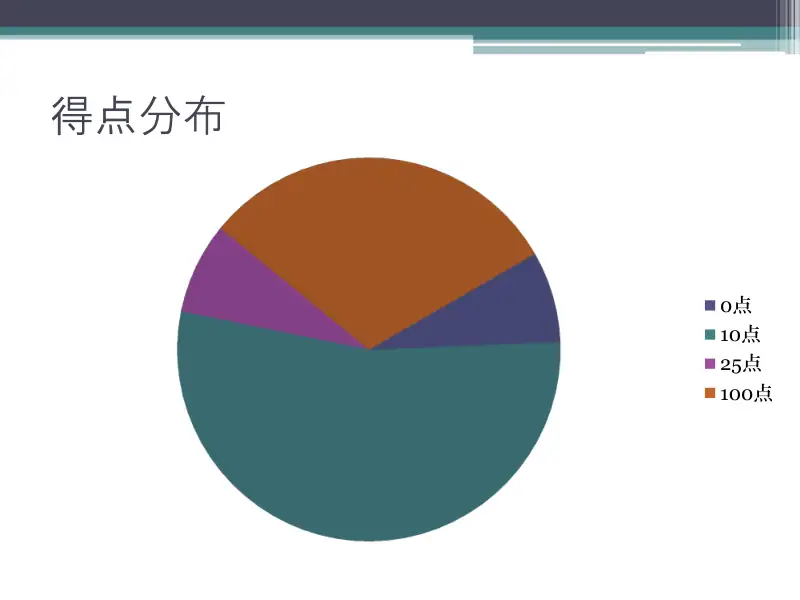
14Raspodjela.
← → tipke ili klik na sliku
Sažetak
- Doseg je interval; $L_j,R_j$ pretvaraju ključeve u uvjete na intervalu.
- Široki koraci segmentnim stablom + memo po stanju ($O(N)$ stanja) ili rekurzija + DSU; $O(N\log N)$.